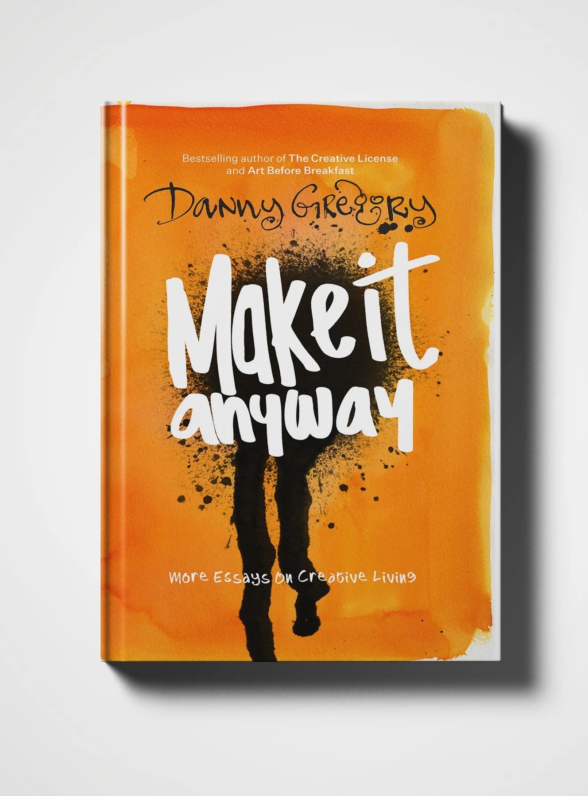

Author · Artist · Creativity Coach
I help people unlock their creativity through drawing.
14 bestselling books. 500,000+ YouTube subscribers. Founder of Sketchbook Skool.

My new book
More essays on creative living. What if you stopped waiting for perfect — and made something anyway? A frank, encouraging look at the creative process and what gets in its way. Essays from a life spent drawing, writing, and teaching others to make art without fear, doubt, or perfectionism holding them back. Quiet the critic, embrace imperfection, and make it — anyway.
Speaking engagements and media inquiries:
© Danny Gregory